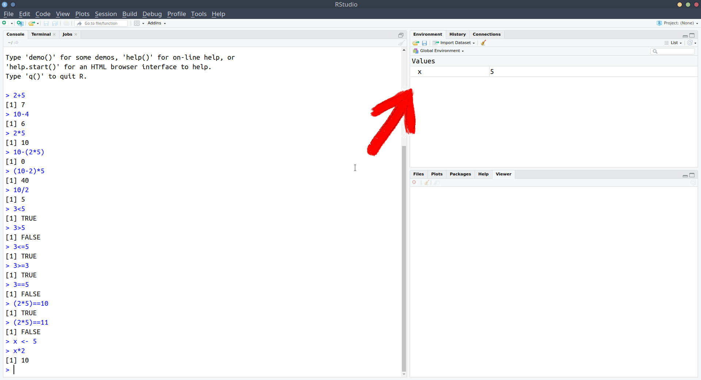
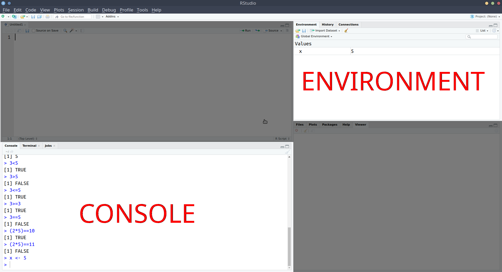
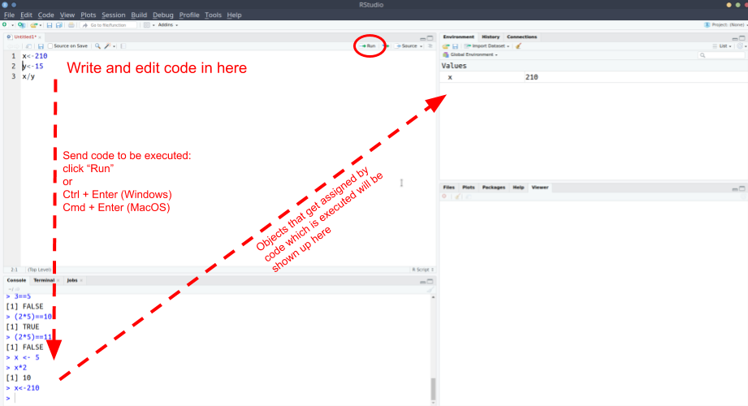

Getting started in R & RStudio
THIS WEEK’S OBJECTIVES
- Get a version of RStudio up and running, and get comfortable with the layout
- Be able to read and store data into R
Getting R and RStudio
R is a widely used software for data analysis. We will interact with R using a nicer interface called RStudio. This combines a text editor, a file explorer, and a plotting window all in the same space.
You have two options for how you use R/RStudio:
Use the PPLS RStudio server. This saves you the time on installing stuff on your own PC as it means you can use R from within an internet browser. It does mean that you will require an internet connection whenever you want to use R.
Download R and RStudio onto your computer.
The PPLS RStudio server has been set up specifically to help teaching Statistics in Psychology.
It comes with many benefits, and we believe that we can offer you better assistance if you use opt to use it.
PPLS has permission to use RSudio on our server specifically for our taught courses using R.
PLEASE DO NOT USE THE SERVER FOR YOUR DISSERTATIONS.


A first look at RStudio
Okay, now you should have RStudio and a project open, and you should see something which looks more or less like the image below, where there are several little windows.

We are going to explore what each of these little windows offer by just diving in and starting to do things.
R as a calculator
Starting in the left-hand window, you’ll notice the blue sign >. This is where we R code gets executed.
Type 2+2, and hit Enter ↵. You should discover that R is a calculator.
Let’s work through some of the basic operations (adding, subtracting, etc). Try these commands yourself:
2 + 510 - 42 * 510 - (2 * 5)(10 - 2) * 510 / 23^2(Hint, interpret the^symbol as “to the power of”)
Helpful tip
Whenever you see the blue sign >, it means R is ready and waiting for you to provide a command.
If you type 10 + and press Enter, you’ll see that instead of > you are left with +.
This means that R is waiting for more.
Either give it more, or cancel the command by pressing the escape key on your keyboard.
As well as performing calculations, we can ask R things, such as “Is 3 less than 5?”:
3 < 5## [1] TRUEAs the computation above returns TRUE, we notice that such questions return either TRUE or FALSE. These are not numbers and are called logical values.
Try the following:
3 > 5“is 3 greater than 5?”3 <= 5“is 3 less than or equal to 5?”3 >= 3“is 3 greater than or equal to 3?”3 == 5“is 3 equal to 5?”(2 * 5) == 10“is 2 times 5 equal to 10?”(2 * 5) != 11“is 2 times 5 NOT equal to 11?”
R as a calculator with a memory
We can also store things in R’s memory, and to do that we just need to give them a name. Type x <- 5 and press Enter.
What has happened? We’ve just stored something named x which has the value 5.
We can now refer to the name and it will give us the value!
Try typing x and hitting Enter. It should give you the number 5.
What about x * 3?
Storing things in R
The<- symbol, pronounced arrow, is used to assign a value to a named object:
[name] <- [value]
Note, there are a few rules about names in R:
- No spaces - spaces inside a name are not allowed (the spaces around the
<-don’t matter):lucky_number <- 5✔lucky number <- 5❌
- Names must start with a letter:
lucky_number <- 5✔1lucky_number <- 5❌
- Case sensitive:
lucky_numberis different fromLucky_Number
- Reserved words - there is a set of words you can’t use as names, including: if, else, for, in, TRUE, FALSE, NULL, NA, NaN, function
(Don’t worry about remembering these, R will tell you if you make the mistake of trying to name a variable after one of these).
You might have noticed that something else happened when you executed the code x <- 5.
The thing we named x with a value of 5 suddenly appeared in the top-right window. This is known as the environment, and it shows everything that we store things in R:

We’ve now used a couple of the windows - we’ve been executing R code in the console, and learned about how we can store things in R’s memory (the environment) by assigning a name to them:

Notice that in the screenshot above, we have moved the console down to the bottom-left, and introduced a new window above it. This is the one that we’re going to talk about next.
The Editor
What if we want to edit our code? Whatever we write in the console just disappears upwards. What if we want to change things we did earlier on?
Well, we can write and edit our code in a separate place before sending it to the console to be executed!!
R scripts
- Open an R script
- File > New File > R script
- Copy and paste the following into the R script
x <- 210
y <- 15
x / y- Position your text-cursor (blinking vertical line) on the top line and press:
- Ctrl + Enter on Windows
- Cmd + Enter on macOS
Notice what has happened - it has sent the command x <- 210 to the console, where it has been executed, and x is now in your environment.
Additionally, it has moved the text-cursor to the next line.

Press Ctrl + Enter (Windows) or Cmd + Enter (macOS) again. Do it twice (this will run the next two lines).
Then, change x to some other number in your R script, and run the lines again (starting at the top).
Add the following line to your R script and execute it (send it to the console pressing Ctrl/Cmd + Enter):
plot(1,5)
A very basic plot should have appeared in the bottom-right of RStudio. The bottom-right window actually does some other useful things, for instance showing you the files associated with your project.
- Save the R script you have been working with:
- File > Save
- give it an appropriate name, and click save.
- Check that you can now see that file in the project, by clicking on the “Files” tab of the bottom-right window.
NOTE: When you save R script files, they terminate with a .R extension.
Comments in code
Using # in R code makes that line a comment, which basically means that R will ignore the line. Comments are useful for you to remind yourself of what your code is doing.
Add a little comment to yourself in your R script. It can be anything you like for now (normally it would be something useful reminding yourself how the code works). Then on a new line type 2+5
# One fine day in the middle of the night, two dead men got up to fight
# back to back they faced each other, drew their swords and shot each other.
2+5## [1] 7Highlight all these lines and click run (or press Ctrl/Cmd + Enter). Notice what happens when these get sent to the console.
What happens if you didn’t have the #? Give it a try and see.
How does R interpret the line below?
4*3 # i am multiplying 4 by 3. 6*8
Looking ahead to Rmarkdown

Figure 1: Artwork by @allison_horst
In addition to R scripts, there is another type of document we can create, known as “Rmarkdown”.
Rmarkdown documents combine the analytical power of R and the utility of a text-processor. We can have one document which contains all of our analysis as well as our written text, and can be compiled into a nicely formatted report. This saves us doing analysis in R and copying results across to Microsoft Word. It ensures our report accurately reflects our analysis. Everything that you’re reading now has all been written in Rmarkdown!
We’re going to use Rmarkdown documents for the assignment of this course, but do not worry too much right now about them - we’ll get into it how to write them later on in the course, but it basically involves writing normal text interspersed with “code-chunks” (i.e., chunks of code!). In the example below, you can see the grey boxes indicating the R code, with text in between. We can then compile the document into either a .pdf or a .html file.

Recap
Okay, so we’ve now seen all of the different windows in RStudio in action:
- The console is where R code gets executed
- The environment is R’s memory, you can assign something a name and store it here, and then refer to it by name in your code.
- The editor is where you can write and edit R code in R scripts and Rmarkdown documents. You can then send this to the console for it to be executed.
- The bottom-right window shows you the plots that you create, the files in your project, and some other things (we’ll get to these later).

Take a breather
Below are a couple of our recommended settings for you to change as you begin your journey in R. After you’ve changed them, take a 5 minute break before moving on to learning about how we store data in R.
Useful Settings 1: Clean environments
As you use R more, you will store lots of things with different names. Throughout this course alone, you’ll probably name hundreds of different things. This could quickly get messy within our project.
We can make it so that we have a clean environment each time you open RStudio. This will be really handy.
- In the top menu, click Tools > Global Options…
- Then, untick the box for “Restore .RData into workspace at startup”, and change “Save workspace to .RData on exit” to Never:

Useful Settings 2: Wrapping code
In the editor, you might end up with a line of code which is really long, but you can make RStudio ‘wrap’ the line, so that you can see it all, without having to scroll:
x <- 1+2+3+6+3+45+8467+356+8565+34+34+657+6756+456+456+54+3+78+3+3476+8+4+67+456+567+3+34575+45+2+6+9+5+6- In the top menu, click Tools > Global Options…
- In the left menu of the box, click “Code”
- Tick the box for “Soft-wrap R source files”
R Packages
Installing R packages
Alongside the basic installation of R and RStudio, there are many add-on packages which the R community create and maintain.
The thousands of packages are part of what makes R such a powerful and useful tool - there is a package for almost everything you could want to do in R.
In the console, type install.packages("cowsay") and hit Enter.
Lots of red text will come up, and it will take a bit of time.
When it has finished, and R is ready for you to use again, you will see the blue sign >.
Using R packages
It’s not enough just to install a package - to actually use the package, we need to load it using library().
We install a package only once. But each time we open RStudio, we have to load the packages we need.

(Source: https://twitter.com/visnut/status/1248087845589274624)
In your R script (not the console), type library(cowsay) and hit enter. This loads the package for us to use it.
Then, type say("hello world", by = "cow") and hit enter.
Hopefully you got a similar result to ours:
library(cowsay)
say("Hi Folks!", by = "cow")##
## -----
## Hi Folks!
## ------
## \ ^__^
## \ (oo)\ ________
## (__)\ )\ /\
## ||------w|
## || ||
In the console, install the package “tidyverse”. Then, in your R script, load the package using library().
Make sure that after typing library(tidyverse) into the r script, you run it (Ctrl/Cmd + Enter).
We’re going to use some functions from it in just a minute.
Storing data into R
Try following along with this section by typing the code into your R script and running them. You will hopefully get the same output as is presented on this page below each bit of code.
We’ve already seen how to assign a value to a name/symbol using <-. However, we’ve only seen how to assign a single number, e.g, x <- 5.
To store a sequence of numbers into R, we combine the values using the combine function c() and give the sequence a name. A sequence of elements all of the same type is called a vector.
To view the stored content, simply type the name of the vector.
myfirstvector <- c(1, 5, 3, 7)
myfirstvector## [1] 1 5 3 7We can perform arithmetic operations on each value of the vector. For example, to add five to each entry:
myfirstvector + 5## [1] 6 10 8 12Recall that vectors are sequences of elements all of the same type. They do not have to be always numbers; they could be words such as real or fictional animals. Words need to be written inside quotations, e.g. “anything”, and instead of being of numeric type, we say they are characters.
wordsvector <- c("cat", "dog", "parrot", "peppapig")
wordsvector## [1] "cat" "dog" "parrot" "peppapig"NOTE
You can use either double-quote or single-quote:
c("cat", "dog", "parrot", "peppapig")## [1] "cat" "dog" "parrot" "peppapig"c('cat', 'dog', 'parrot', 'peppapig')## [1] "cat" "dog" "parrot" "peppapig"The function class() will tell you the type of the object. In this case, it is a character vector.
class(wordsvector)## [1] "character"It does not make sense to add a number to words, hence some operations like addition and multiplication are only defined on vectors of numeric type. If you make a mistake, R will warn you with a red error message.
wordsvector + 5Error in wordsvector + 5 : non-numeric argument to binary operator
Finally, it is important to notice that if you combine together in a vector a number and a word, R will transform all elements to be of the same type. Why? Recall: vectors are sequences of elements all of the same type. Typically, R chooses the most general type between the two. In this particular case, it would make everything a character, check the ““, as it would be harder to transform a word into a number!
mysecondvector <- c(4, "cat")
mysecondvector## [1] "4" "cat"Reading data into R
While we can manually input data like we did above, more often, we will need to read in data which has been created elsewhere (like in excel, or by some software which is used to present participants with experiments).
Open Microsoft Excel, or LibreOffice Calc, or whatever spreadsheet software you have available to you, and create some data with more than one variable.
It can be whatever you want, but we’ve used a very small example here for you to follow, so feel free to use it if you like.
We’ve got two sets of values here: the names and the birth-years of each member of the Beatles. The easiest way to think of this would be to have a row for each Beatle, and a column for each of name and birth-year.

Save the data as a .csv file.
Although R can read data when it’s saved in Microsoft/LibreOffice formats, the simplest, and most universal way to save data is as simple text, with the values separated by some character - .csv stands for comma separated values.
In Microsoft Excel, if you go to File > Save as
In the Save as Type box, choose to save the file as CSV (Comma delimited).
Important: save your data in the project folder you created at the start of this lab.
Back in RStudio…
Next, we’re going to read the data into R. We can do this by using the read_csv() function, and directing it to the file you just saved.
To read the data into R, simply type:
read_csv("name-of-your-data.csv"), where you replace name-of-your-data with whatever you just saved your data as in your spreadsheet software.
If you have your text-cursor inside the quotation marks, and press the tab key on your keyboard, it will show you the files inside your project. You can then use the arrow keys to choose between them and press Enter to add the code:
When you run the line of code you just wrote, it will print out the data, but will not store it. To do that, we need to assign it as something:
beatles <- read_csv("data_from_excel.csv")Note that this will now turn up in the Environment pane of RStudio.
Now that we’ve got our data in R, we can print it out by simply invoking its name:
beatles## # A tibble: 4 × 2
## name birth_year
## <chr> <dbl>
## 1 John 1940
## 2 Paul 1942
## 3 George 1943
## 4 Ringo 1940And we can do things such as ask R how many rows and columns there are:
dim(beatles)## [1] 4 2This says that there are 4 members of the Beatles, and for each we have 2 measurements.
To get more insight into what the data actually are, you can either use the structure str() function, or glimpse() function to get a glimpse at the data:
str(beatles)## spec_tbl_df [4 × 2] (S3: spec_tbl_df/tbl_df/tbl/data.frame)
## $ name : chr [1:4] "John" "Paul" "George" "Ringo"
## $ birth_year: num [1:4] 1940 1942 1943 1940
## - attr(*, "spec")=
## .. cols(
## .. name = col_character(),
## .. birth_year = col_double()
## .. )
## - attr(*, "problems")=<externalptr>glimpse(beatles)## Rows: 4
## Columns: 2
## $ name <chr> "John", "Paul", "George", "Ringo"
## $ birth_year <dbl> 1940, 1942, 1943, 1940Use dim() to confirm how many rows and columns are in your data.
Use str() or glimpse() to take a look at the structure of the data. Don’t worry about the output of str() right now, we’ll pick up with this in the next chapter.
dim(), str(), read_csv() are all functions.
Functions perform specific operations / transformations in computer programming.
They can have inputs and outputs. For example, dim() takes some data you have stored in R as its input, and gives the dimensions of the data as its output.
In R, functions come with help pages, where you can see information about the various inputs and outputs, and examples of how to use them.
In the console, type ?dim (or ?dim() will work too) and press Enter.
The bottom-right pane (where things like plots are also shown), should switch to the Help tab, and open the documentation page for the dim() function!
Why did we ask you to write this bit in the console, whereas previously we’ve been writing stuff in the R script in the editor?
Well, when writing an R code, the aim at the end is to have a nice document which concisely gives the computer the instructions required to compute your analysis.
It’s not necessary to keep a line like ?dim() which is just looking up how to use some function. Similarly, when writing an essay, you wouldn’t leave a line saying that you looked up a word in the dictionary before using it.
Because lines like this have no consequences on code below, your R script will do the same thing with/without that line
Consider the example code below. The 2nd, 3rd, and 5th lines do absolutely nothing to our computations with x and y.
x <- 4
x
4*33
y <- 6/100
?mean
answer <- x*ySave your files!
Don’t forget to save your R script!
Checklist for today
- EITHER:
- Option A: Get started with the PPLS RStudio Server ✔
- Option B: Install R and RStudio ✔
- Start a new project for the course ✔
- Change a few RStudio settings (recommended) ✔
- Install some R packages (the “tidyverse”) ✔
- Complete today’s tasks and exercises on storing data in R ✔
- Save your R script! ✔
- Celebrate! ✔ 🎉
Glossary
- Console: where the code gets executed
- Environment: R’s memory, it lists all the names of things with stuff stored into them
- Editor: where we edit code
- R script: a file with R code and comments
- Rmarkdown document: an enhanced file where you can combine together R code, explanatory text, and plots.
- packages (also library): user-created bundles providing additional functionality to your local R installation
- functions: they take inputs, do some transformation or computation on them, and return a result (output)
- ?: returns the help page of a function, e.g. ?dim.
| Symbol | Description | Example |
|---|---|---|
+ |
Adds two numbers together | 2+2 - two plus two |
- |
Subtract one number from another | 3-1 - three minus one |
* |
Multiply two numbers together | 3*3 - three times three |
/ |
Divide one number by another | 9/3 - nine divided by three |
() |
group operations together | (2+2)/4 is different from 2+2/4 |
^ |
to the power of.. | 4^2 - four to the power of two, or four squared |
<- |
stores an object in R with the left hand side (LHS) as the name, and the RHS as the value | x <- 10 |
= |
stores an object in R with the left hand side (LHS) as the name, and the RHS as the value | x = 10 |
< |
is less than? | 2 < 3 |
> |
is greater than? | 2 > 3 |
<= |
is less than or equal to? | 2 <= 3 |
>= |
is greater than or equal to? | 2 >= 2 |
== |
is equal to? | (5+5) == 10 |
!= |
is not equal to? | (2+3) != 4 |
c() |
combines values into a vector (a sequence of values) | c(1,2,3,4) |

This workbook was written by Josiah King, Umberto Noe, and Martin Corley, and is licensed under a Creative Commons Attribution 4.0 International License.